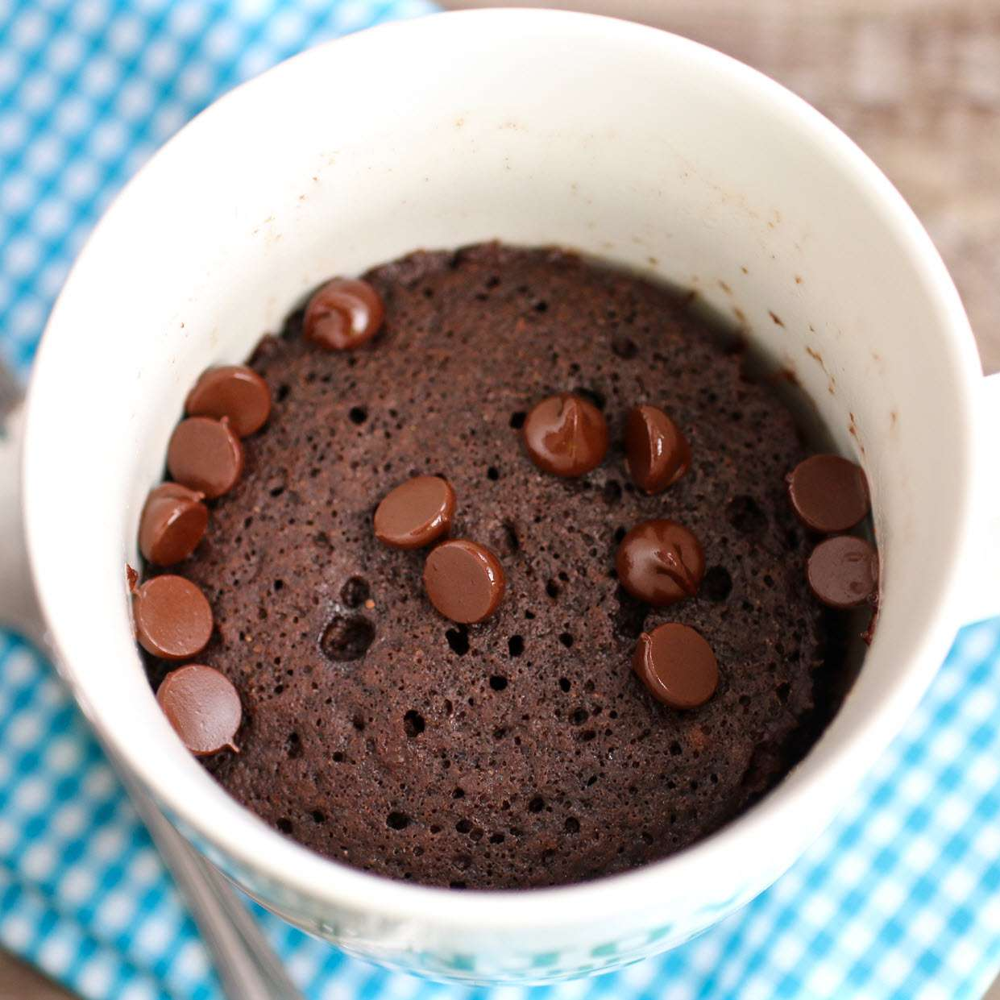

Chocolate Mug Cake

Ingredients
- ¼ cup all-purpose flour
- ¼ cup white sugar
- 2 tablespoons unsweetened cocoa powder
- ⅛ teaspoon baking soda
- ⅛ teaspoon salt
- 3 tablespoons milk
- 2 tablespoons canola oil
- 1 tablespoon water
- ¼ teaspoon vanilla extract
Steps
- Mix flour, sugar, cocoa powder, baking soda, and salt together in a large microwave-safe mug; stir in milk, canola oil, water, and vanilla extract.
- Cook in the microwave until cake is done in the middle, about 1 minute 45 seconds.